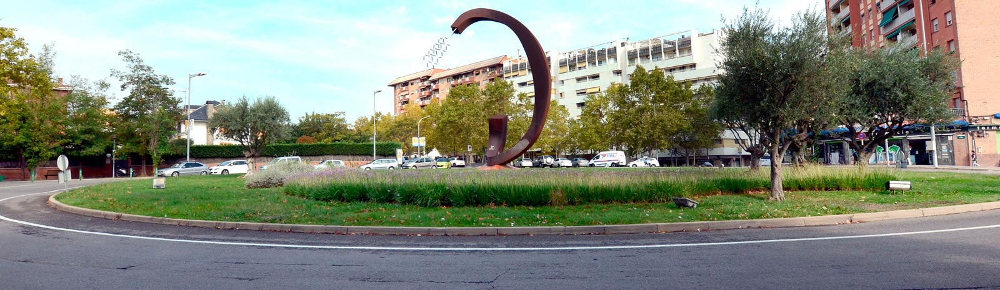

1. La Unión Europea y los ODS
La Unión Europea desempeña un papel crucial en la implementación de los Objetivos de Desarrollo Sostenible (ODS).
Cada uno de los 17 ODS se abordaz mediante políticas específicas, programas y marcos regulatorios
diseñados para garantizar un futuro sostenible.
- ODS 7: Programas de apoyo a las energías renovables, como el impulso de tecnologías limpias.
- ODS 1 y 10: Iniciativas para reducir la pobreza y fomentar la igualdad de oportunidades.
- ODS 5: Medidas para garantizar la igualdad de género en todos los sectores.
2. El Pacto Verde Europeo
El Pacto Verde Europeo es la hoja de ruta de la Unión Europea para alcanzar la neutralidad climática en 2050.
Este plan abarca diversas estrategias como:
- Economía circular: Promoción de la reutilización y reciclaje para reducir residuos.
- Transición energética: Fomento de fuentes de energía renovable y la descarbonización.
3. Financiación de la sostenibilidad
Para apoyar la transición ecológica, la Unión Europea ha creado instrumentos financieros como:
- Next Generation EU: Fondo de recuperación diseñado para proyectos sostenibles.
- Fondos de Recuperación: Ayudas para empresas que desarrollen iniciativas respetuosas con el medio ambiente.
Las empresas pueden acceder a estos fondos presentando proyectos innovadores que promuevan la sostenibilidad y la transición ecológica.